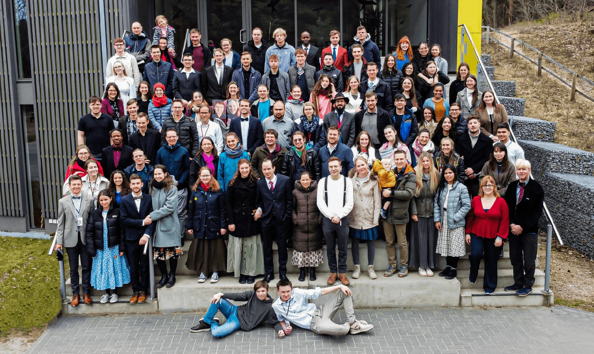

2025 N° 4
Die beiden Hauptsprecher David Harms und Benjamin Barth teilten viele eigene Erfahrungen und ließen dadurch den Sinn des Lebens praktisch erlebbar werden. Praktisch war ebenfalls der Outreach, welcher in Fürstenwalde statt fand.
sinn|voll – „Gott wahrnehmen in einer überreizten Welt“
war das Thema des 4. LAY Congress 2025